The Search Results page displays files for any search performed in the search entry field in the title area of any page. The header displays the total number of matches and the number range of the first page. Each file is expandable to display all the lines that match the keyword. You can use right arrow key to pop up a 5-line context around the line. To view the file with the line located you can click on any match to open the editor. The page is designed to display multiple pages if the number of result files exceeds 40. To view more results you can use the previous and next page actions in the tool bar.
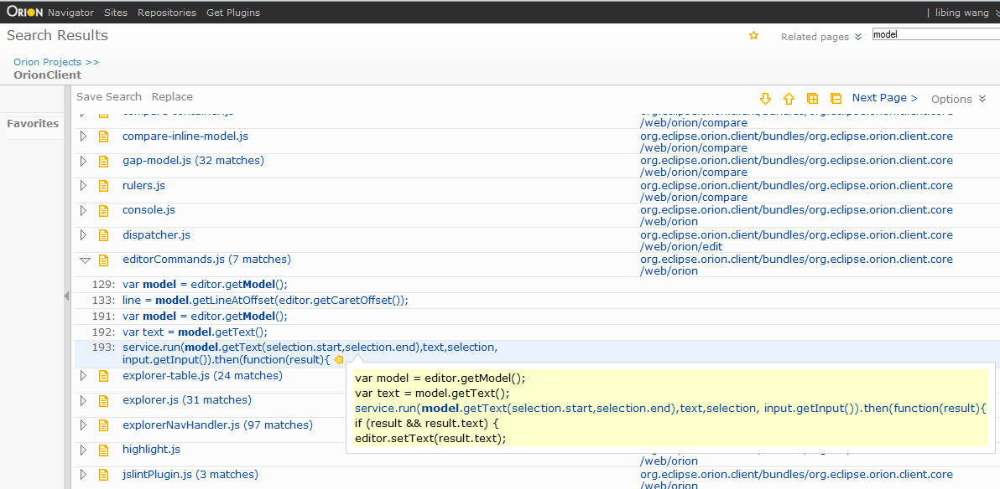
If you start a search from a page where a folder is presented, or in another word, if bread crumb is presented, the place holder of the search entry field indicates the folder name on which your search will start. Currently the pages supporting this are navigator, git log, editor and search pages. For all other pages, the search will start from the project root. But once you are in the search result page, you can scope up and down for the same keyword.
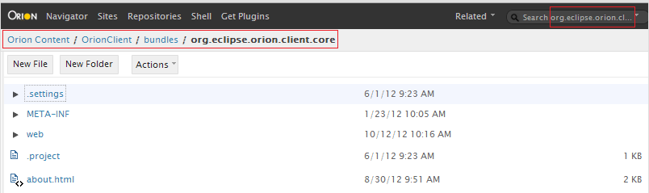
Let's assume that you've just searched for "function" on a folder and you got 265 files but you want to see the results on a folder you are interested in. You can now click on the location column where the interesting folder is presented. The result will be scoped down to that folder by the same keyword.
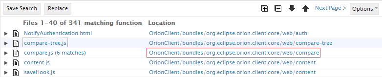
If your search result presents a sub folder but you want a broader scope, you can click on any segment in the breadcrumb. The result will be scoped up to that folder by the same keyword.
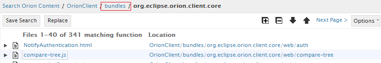
Click Save Search in the toolbar to bookmark a link to this search for future use. Let's say you are searching "foo" on folder "bar". The default name of the saved search is "foo in bar" but you can rename it later to a more meaningful one. Note that this is a bookmark to the search, rather than a specific search result. Clicking on a link in the Searches list in the search result page will perform a new search with the same search terms. You can also perform the saved search from the search options in any other pages.
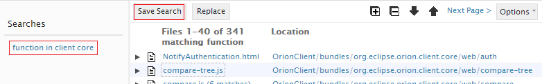
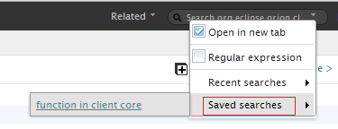
There are four actions in the tool bar for navigating matches. Expand all and Collapse all are convenient actions to view all matches or just view the file list. Up and Down allow you to just iterate all the files and matches top-down or bottom-up. While you are iterating, the current row is moving to indicate where you are. You can also jump over to a specific file or match by clicking on that row, which gives a quick switch-over to where you want to start the iteration. The current row is always cached as the browser's cookie based on the search URL. If you leave the page and come back or refresh the page, the current row is restored.
When search result page is loaded, the result pane is focused and the current row is highlighted where you can use the keyboard navigation. Note that keyboard navigation is available only when the result pane gets focus. If focus is not on the result pane, just click on any place in the result pane to get it back.
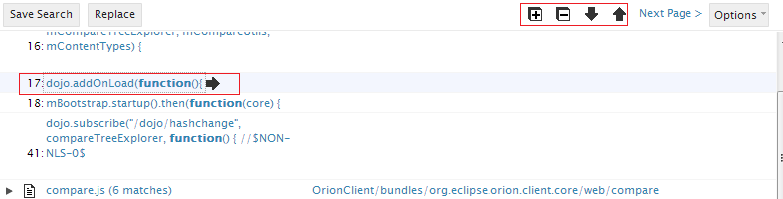
Keyboard navigation when doing global search and replace is similar. But as the file and match names are not links to open the editor, enter key is not available. Also note that there is no context tip because you can view them in the compare view.
There are two ways to view details on a match. When the current row is on a match, pressing right arrow key will pop up a context tip with five lines of code around the hit line. Note that if you use up and down arrow keys from now, the context tip changes contents when a match is iterated. Use left arrow key to cancel the context tip. If you want to view more details, press enter key or click on the link of the match. This will open the Orion editor with the line located at the matching place.
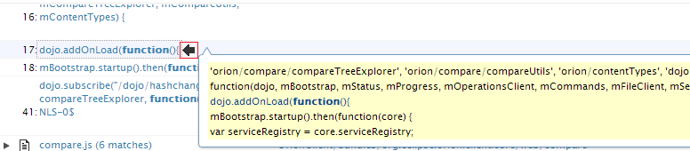
When you choose to open the editor for more details, the editor will be opened with the find&replace feature for you. If you click on a file, the editor will open with the first match highlighted. If you click on a match, that match will be highlighted in the editor. You can then continue to work on this single file without bothering to bring the find&replace up again.
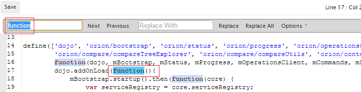
If the number of matching files exceeds the page size, which is 40 by default, the Next page and Previous page actions will appear in the tool bar. Although it is not recommended to change the search URL, but if you really want to view all the results in one page you can change the rows parameter to the total file number. In the example above you can change rows=265 so that the new search url will look like http://orion.eclipse.org/search/search.html#?sort=Path asc&rows=265&start=0&q=function+Location:/file/B2/bundles/*. Note that changing this to a large number should only be used in some rare cases, such as replacing more than 40 files at once. Please also note that this could slow down the search and introduce server timeout.
The matching files are sorted by the folder names by default. Click on the options on the tool bar and check Sort by Name to invoke the search again sorted by the file names.
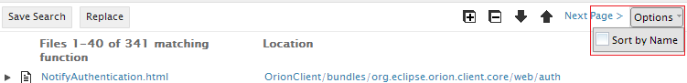
Orion search is based on the file indexer on the server side. There may be some rare cases that your updated files are not synced up into indexer yet when you invoke the search. For example, if you search on foo and replace all the matches with bar in a file and then search on foo again right away. Depending on how many files on the server, the indexer may still hit the file but the file does not contain foo any more. In this case the file is greyed out in the result list but if you search again later it will disappear from the list completely.
When the replace page is loaded, the compare view is displayed by default at the bottom of the main pain. While you are iterating matches, the compare view highlights the difference for the current row. Note that you can click on Hide Compare on the toolbar to hide it for a smoother iteration and bring it back later by Show Compare.
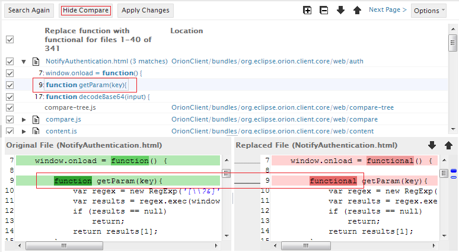
There are several limitations that will be addressed in the future releases.
This document is maintained in a collaborative wiki. If you wish to update or modify this document please visit http://wiki.eclipse.org/Orion/Documentation/User_Guide/Reference/Search_Results_page